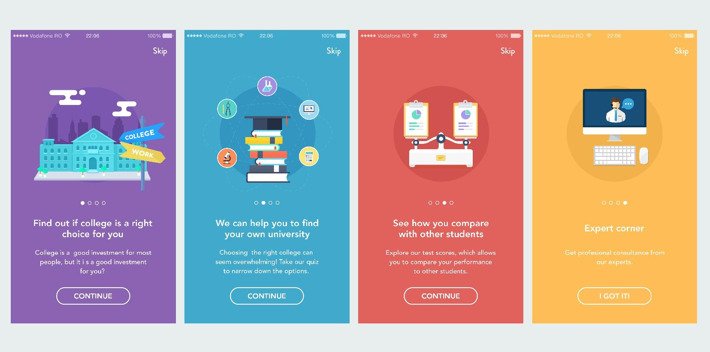

到这一章节，我们已经完成了产品的雏形，MVP 就是优雅的排版效果，你可以拿给朋友看一看，当我完成的时候，并没有想别人会多么喜欢这款软件，但是我很喜欢，所以当我拿给朋友的时候，收到强烈的赞赏是意料之外的。
名字往往会成为一款产品区分用户的标志。
小记一开始并不叫小记，它叫日记，之所以这么普通，是因为我一开始只是为了做给自己记录点东西。
当决定把这款软件推出给更多人用的时候，名字就成了一个问题。
日记并没有吸引力，也无法体现这种特质，在我睿智的朋友的建议下，我该作了小记，小字非常可爱，也能表现这款软件适合于小文本的记录与分享。
而当时朋友提出了另外一个问题，就是如果打开 App 的时候是空的，他不知道该干嘛。
所以我决定加入三首例子，来解决这个疑惑——这到底是什么，怎么用。
当产品要给用户使用的时候，就要多考虑几个环节
如果你的产品交互非常直白，那么可能就完全不需要教程。像小记采用的交互有一个很特殊的地方，就是双击返回。
这是为了保持界面的干净，我自己使用的话并不需要什么显式的交互。如果你希望所有人都会使用，那么就要加很多明显的按钮，文字提示。最终我选择了加入下拉返回，这个交互和 Inbox by Google 是一样的。当然这依旧很不明显，所以我们最终可能还是要加入教程。
当产品真的发布之后，收集用户的反馈是很有用的，一方面可以知道他们的困难在哪里，另外也可以从他们提出的意见里寻找灵感。
但要注意的是，他们提出的解决方案往往并不是行之有效的，解决问题的办法往往是简单粗暴，未经仔细考量。并且，如果你的产品的核心功能并不能真的解决问题，那改进所有周边的毛病都不能帮助你的产品走向成功。
教程的形式主要有三种
说明书式就是最常见的 App 打开几个页面滑过去的教程，这种很多人不看，但好处是让用户知道你的 App 大概是干什么用的。

很多 App 现在也开始使用这种教程来制作更新说明。
引导式教程主要是在界面增加一些文字来提示你，例如下拉刷新的时候，会有文字标识来提示状态。
交互式的教程强制用户跟着你的指示做一遍操作，适用于如果你的产品很有交互颠覆性，不符合以前的习惯的时候。这种教程技术难度比较高——因为往往你并不知道用户会怎么点你的 App，并且，对于聪明的用户，这种交互会让人感觉极为烦躁。
教程很重要的一点是让用户知道整体的进度情况，在说明书式教程里，进度往往一目了然，而在交互式教程里，往往用户并不知道教程在何处结束，这也是用户失去耐心的一个重要原因。
而最终给我决定给小记增加一个提示，在查看文章的时候，弹出了一个提示双击返回的页面。